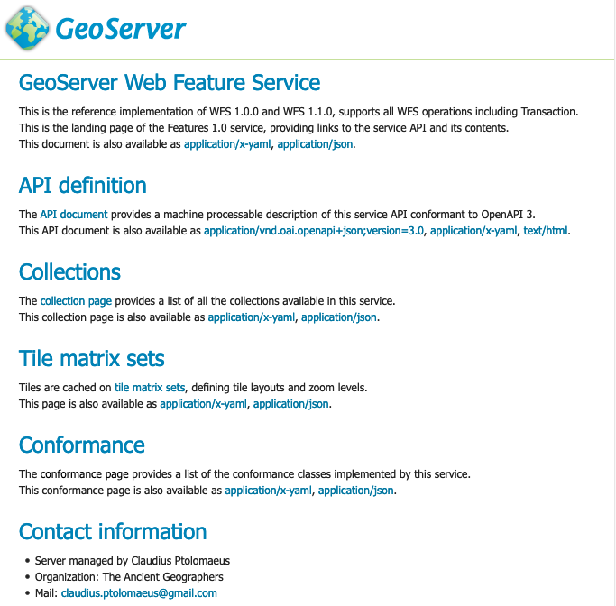
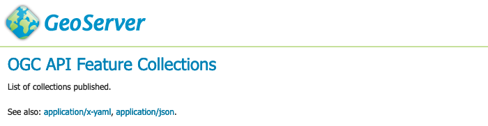

OGC API Features¶
An OGC Features API publishing feature data using an OpenAPI web service.
Version |
Implementation status |
|
|---|---|---|
Part 1: Core |
Additional errata and clarifications not yet reviewed. |
|
Up to date with 1.0.0 release version. |
||
Part 2: CRS by Reference |
Not yet implemented |
|
Draft |
Draft implemented, update to final release required. |
|
Part 3: Filtering and CQL |
Draft implemented |
Service¶
The OGC API Features Service is accessed via the FEATURES version 1.0 link on the home page.
Capabilities¶
The service is self described using:
html: A collection of web pages, with links for navigation between content (and that can be indexed by search engines for discoverability).OGC API Features service¶
application/json: A collection of
jsondocuments, with reference between each document for programmatic access by web developers.{ "title": "GeoServer Web Feature Service", "description": "This is the reference implementation of WFS 1.0.0 and WFS 1.1.0, supports all WFS operations including Transaction.", "links": [ { "href": "http://localhost:8080/geoserver/ogc/features/?f=application%2Fx-yaml", "rel": "alternate", "type": "application/x-yaml", "title": "This document as application/x-yaml" }, { "href": "http://localhost:8080/geoserver/ogc/features/?f=application%2Fjson", "rel": "self", "type": "application/json", "title": "This document" }, { "href": "http://localhost:8080/geoserver/ogc/features/?f=text%2Fhtml", "rel": "alternate", "type": "text/html", "title": "This document as text/html" }
application/x-yaml: A collection ofyamldocuments, with references between each document for programmatic access.title: GeoServer Web Feature Service description: This is the reference implementation of WFS 1.0.0 and WFS 1.1.0, supports all WFS operations including Transaction. links: - href: http://localhost:8080/geoserver/ogc/features/?f=application%2Fx-yaml rel: self type: application/x-yaml title: This document - href: http://localhost:8080/geoserver/ogc/features/?f=application%2Fjson rel: alternate type: application/json title: This document as application/json - href: http://localhost:8080/geoserver/ogc/features/?f=text%2Fhtml rel: alternate type: text/html title: This document as text/html
The service title and description are provided by the existing Web Feature Service (WFS) settings.
Open API¶
For programatic access an OpenAPI description of the service is provided, that may be browsed as documentation, or used to generate a client to access the web services.
OGC API Features OpenAPI Document¶
Collections¶
The collection of feature types being published by the service.
Each collection entry is described using the layer details of title, description, geographic extent.
Data can be browsed as web pages, or downloaded in a range of formats such as GeoJSON and GML documents.
Collection sf:roads download formats¶
Tile matrix sets (extension)¶
Addition from OGC API Tiles extension listing tile matrix sets, linking to their definition.

Tile matrix EPSG:4326 definition¶
Conformance¶
Lists the operations this service can perform, each “conformance class” documents supported functionality.
OGC API Features Conformance¶
Contact information¶
Advertises contact information for the service.
Defined by defined in by Contact Information.
Service Configuration¶
The service does not require any additional configuration to use. The service is configured using:
The existing Web Feature Service (WFS) settings to define title, abstract, and output formats.
This is why the service page is is titled GeoServer Web Feature Service` by default.
Built-in templates used for html generation
HTML Templates¶
To override an OGC API Features template:
Create a directory
ogc/featuresin the location you wish to override:GEOSERVER_DATA_DIR/templates/ogc/featuresGEOSERVER_DATA_DIR/workspace/workspace/ogc/featuresGEOSERVER_DATA_DIR/workspace/workspace/datastore/ogc/featuresGEOSERVER_DATA_DIR/workspace/workspace/datastore/featuretype/ogc/features
Create a file in this location, using the GeoServer 2.19.2 examples below:
The above built-in examples are for GeoServer 2.19.2, please check for any changes when upgrading GeoServer.
As an example
ogc/features/collections.ftlis used to list published collection:<#global pagecrumbs="<li class='breadcrumb-item'><a href='"+serviceLink("")+"'>Home</a></li><li class='breadcrumb-item active'>Collections</li>"> <#include "common-header.ftl"> <h1>GeoServer Feature Collections</h1> <p class="my-4"> This document lists all the collections available in the Features service.<br/> This document is also available as <#list model.getLinksExcept(null, "text/html") as link><a href="${link.href}">${link.type}</a><#if link_has_next>, </#if></#list>. </p> <div class="row"> <#list model.collections as collection> <div class="col-xs-12 col-md-6 col-lg-4 pb-4"> <div class="card h-100"> <div class="card-header"> <h2><a href="${serviceLink("collections/${collection.id}")}">${collection.id}</a></h2> </div> <#include "collection_include.ftl"> </div> </div> </#list> </div> <#include "common-footer.ftl">Save file to
GEOSERVER_DATA_DIR/workspace/templates/ogc/collections.ftl, and rewrite as:<#include "common-header.ftl"> <h2>OGC API Feature Collections</h2> <p>List of collections published.</p> <p>See also: <#list model.getLinksExcept(null, "text/html") as link> <a href="${link.href}">${link.type}</a><#if link_has_next>, </#if></#list>.</p> <#list model.collections as collection> <h2><a href="${serviceLink("collections/${collection.id}")}">${collection.id}</a></h2> <#include "collection_include.ftl"> </#list> <#include "common-footer.ftl">A restart is required, as templates are cached.
template collections.ftl override applied¶
Language codes are appended for internationalization. For French create the file
GEOSERVER_DATA_DIR/workspace/workspace/ogc/collections_fr.ftland translate contents:<#include "common-header.ftl"> <h2>OGC API Feature Service</h2> <p>Liste des collections publiées.</p> <p>Voir également: <#list model.getLinksExcept(null, "text/html") as link> <a href="${link.href}">${link.type}</a><#if link_has_next>, </#if></#list>.</p> <#list model.collections as collection> <h2><a href="${serviceLink("collections/${collection.id}")}">${collection.id}</a></h2> <#include "collection_include.ftl"> </#list> <#include "common-footer.ftl">For details on how to write templates see Freemarker Templates tutorial.